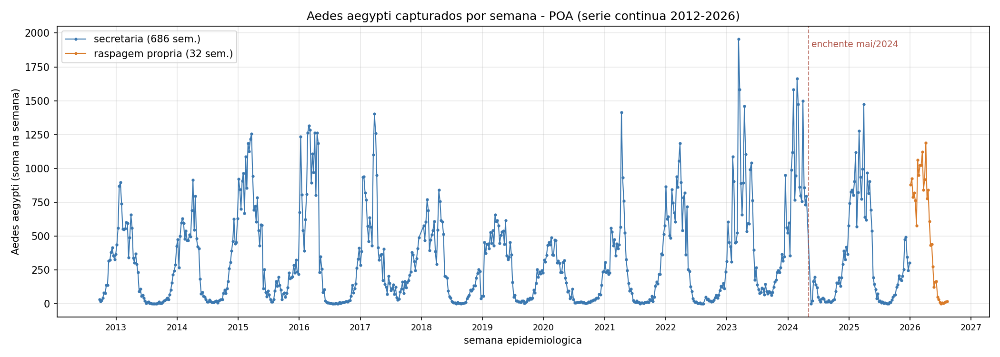

PPGC — UFRGS (Mestrado) · Porto Alegre, RS
Prever, com semanas de antecedencia, quando o mosquito Aedes aegypti e a dengue vao aumentar em Porto Alegre.
Porto Alegre — previsao semana a semana. Este painel reune os dados, o objetivo e os resultados dos experimentos num lugar so.
8
Cenarios
16
Modelos treinados
0.488
Melhor R²
23/07/2026
Ultima execucao
Dados
As fontes que alimentam as previsoes
Tudo e medido semana a semana e depois juntado numa tabela unica.
O caminho dos dados
Fontesmosquito, clima, casos, El Nino
→
Montagemjunta tudo por semana (tabela_final)
→
Experimentotreina o modelo e mede o acerto
→
Resultadosmetricas, graficos e este painel
As fontes
| Fonte | Cobertura | Frequencia | Papel | Origem |
|---|---|---|---|---|
Captura de mosquito (atual) insubstituivel | 2025 em diante | semanal | vetor | Raspado do sistema oficial, semana a semana. |
Captura de mosquito (historico) | 2019 a 2023 | semanal | vetor | Base da pesquisadora Marilia. |
Clima | serie longa | diario e semanal | clima | NASA POWER (satelite e reanalise). |
El Nino / La Nina (ENSO) | serie longa | mensal | clima | NOAA. |
Casos de dengue confirmados | serie longa | semanal | alvo | SINAN / Ministerio da Saude (dado publico). |
InfoDengue (Porto Alegre) | desde 2010 | semanal | contexto | InfoDengue (Fiocruz e FGV). |
O que compoe o clima
Cada grandeza vem resumida na semana (minimo / media / maximo), por isso sao varias por tema:
| Tema | Colunas |
|---|---|
| 🌧️Chuva | precip_total_mmprecip_max_dia_mmprecip_media_dia_mmdias_de_chuva |
| 🌡️Temperatura | temp_mediatemp_mintemp_maxtemp_amplitude_media |
| 💧Ponto de orvalho | orvalho_minorvalho_mediaorvalho_max |
| 💦Umidade | umid_minumid_mediaumid_max |
| 🔻Pressao | pressao_minpressao_mediapressao_max |
| ☀️Radiacao solar | radiacao_minradiacao_mediaradiacao_max |
| 🌫️Vento | vento_mediavento_max |
Sao 22 colunas, todas do NASA POWER (agregadas de diario para semanal). O modelo ainda cria versoes defasadas (1 a 4 semanas) de algumas delas, para tambem olhar o clima das semanas anteriores.
A serie do mosquito

A limitacao dos dados